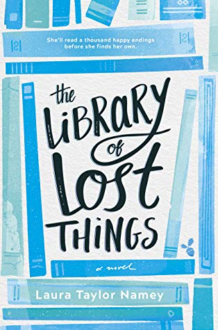
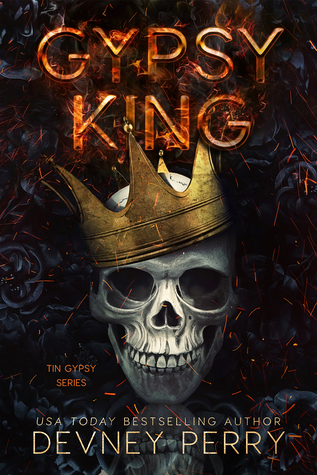
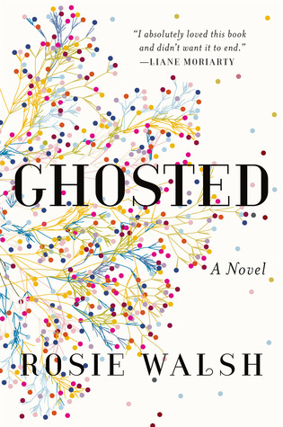
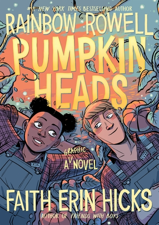
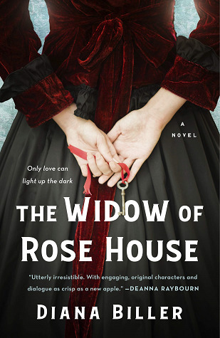
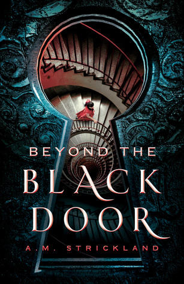
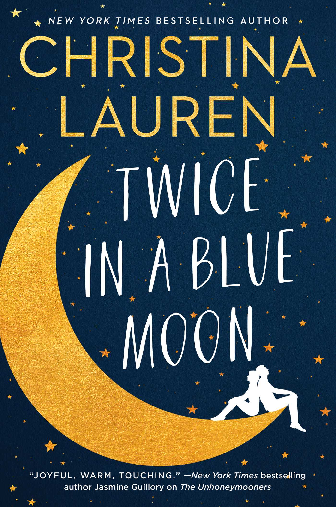

The Beautiful
(The Beautiful #1)
by Renée Ahdieh
(The Beautiful #1)
by Renée Ahdieh
 From the moment she first learned to read, literary genius Darcy Wells has spent most of her time living in the worlds of her books. There, she can avoid the crushing reality of her mother’s hoarding and pretend her life is simply ordinary. But when a new property manager becomes more active in the upkeep of their apartment complex, the only home Darcy has ever known outside of her books suddenly hangs in the balance.
The Library of Lost Things
by Laura Taylor Namey
by Laura Taylor Namey
 The former Tin Gypsy motorcycle club has everyone in Clifton Forge, Montana convinced they’ve locked their clubhouse doors and ripped off their patches. Everyone but Bryce Ryan. There’s more happening at the club’s garage than muscle car restorations and Harley rebuilds. Her instincts are screaming there’s a story—one she’s going to tell.
Gypsy King
(Tin Gypsy #1)
by Devney Perry
(Tin Gypsy #1)
by Devney Perry
 Lowen Ashleigh is a struggling writer on the brink of financial ruin when she accepts the job offer of a lifetime. Jeremy Crawford, husband of bestselling author Verity Crawford, has hired Lowen to complete the remaining books in a successful series his injured wife is unable to finish.
Lowen Ashleigh is a struggling writer on the brink of financial ruin when she accepts the job offer of a lifetime. Jeremy Crawford, husband of bestselling author Verity Crawford, has hired Lowen to complete the remaining books in a successful series his injured wife is unable to finish.
Verity
by Colleen Hoover
by Colleen Hoover
 When Sarah meets Eddie, they connect instantly and fall in love. To Sarah, it seems as though her life has finally begun. And it's mutual: It's as though Eddie has been waiting for her, too. Sarah has never been so certain of anything. So when Eddie leaves for a long-booked vacation and promises to call from the airport, she has no cause to doubt him. But he doesn't call.
Ghosted
by Rosie Walsh
by Rosie Walsh
 Deja and Josiah are seasonal best friends.
Every autumn, all through high school, they’ve worked together at the best pumpkin patch in the whole wide world. (Not many people know that the best pumpkin patch in the whole wide world is in Omaha, Nebraska, but it definitely is.) They say good-bye every Halloween, and they’re reunited every September 1.
Every autumn, all through high school, they’ve worked together at the best pumpkin patch in the whole wide world. (Not many people know that the best pumpkin patch in the whole wide world is in Omaha, Nebraska, but it definitely is.) They say good-bye every Halloween, and they’re reunited every September 1.
Pumpkinheads
by Rainbow Rowell
by Rainbow Rowell
 A young widow restores a dilapidated mansion with the assistance of a charming, eccentric genius, only to find the house is full of dangerous secrets in this effervescent Gilded Age debut novel
The Widow of Rose House
by Diana Biller
by Diana Biller
 Kamai was warned never to open the black door, but she didn't listen ...
Everyone has a soul. Some are beautiful gardens, others are frightening dungeons. Soulwalkers―like Kamai and her mother―can journey into other people's souls while they sleep.
Everyone has a soul. Some are beautiful gardens, others are frightening dungeons. Soulwalkers―like Kamai and her mother―can journey into other people's souls while they sleep.
Beyond the Black Door
by A.M. Strickland
by A.M. Strickland
 Sam Brandis was Tate Jones’s first: Her first love. Her first everything. Including her first heartbreak.
During a whirlwind two-week vacation abroad, Sam and Tate fell for each other in only the way that first loves do: sharing all of their hopes, dreams, and deepest secrets along the way. Sam was the first, and only, person that Tate—the long-lost daughter of one of the world’s biggest film stars—ever revealed her identity to. So when it became clear her trust was misplaced, her world shattered for good.
During a whirlwind two-week vacation abroad, Sam and Tate fell for each other in only the way that first loves do: sharing all of their hopes, dreams, and deepest secrets along the way. Sam was the first, and only, person that Tate—the long-lost daughter of one of the world’s biggest film stars—ever revealed her identity to. So when it became clear her trust was misplaced, her world shattered for good.
Twice in a Blue Moon
by Christina Lauren
by Christina Lauren